1과목: 디지털전자회로
1. 전원 주파수 60[Hz]를 사용하는 정류회로에서 120[Hz]의 맥동 주파수를 나타내는 정류방식은?
2. 다음과 같은 정전압 회로에서 입력전압 Vin이 15[V]∼18[V]의 범위로 변동하는 경우 제너다이오드 전류 ID의 변화는 얼마인가? (단, RL=1[kΩ], VL=10[V]이다.)
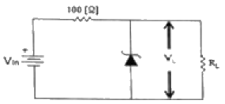
3. 다음 중 공통 이미터(CE) 증폭기회로에 대한 설명으로 옳은 것은?
4. 그림과 같은 부궤환 증폭기의 폐루프(Closed-Loop) 차단주파수는? (단, 개루프(Open Loop)일 때, 이득-대역폭 곱은 1×105[Hz]이다.)
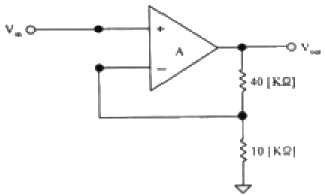
5. 다음 중 차동증폭기의 동상신호제거비(Common-Mode Rejection Radio)에 대한 설명으로 틀린 것은?
6. 다음 중 푸시 풀(Push-Pull)증폭기에서 출력파형의 찌그러짐이 작아지는 이유는?
7. 발진회로에서 발진을 지속하기 위해 필요한 과정은?
8. 하틀리 발진회로에서 커패시턴스 C=200[pF], 인덕턴스 L1=180[μH], L2=20[μH] 및 상호인덕턴스 M=90[μH]의 값을 가질 떄 발진주파수는 약 얼마인가?
9. 다음 중 주파수변조(FM)에서 신호대 잡음비(S/N)를 개선하기 위한 방법으로 틀린 것은?
10. 다음 중 FM에 대한 특징으로 틀린 것은?
11. QAM 변조방식은 디지털 신호의 전송 효율향상, 대역폭의 효율적 이용, 낮은 에러율, 변조의 용이성을 위해 어떤 변조 방식을 결합한 것인가?
12. 정보 전송에서 800[Baud]의 변조 속도로 4상 차분 위상 변조된 데이터 신호 속도는 얼마인가?
13. 다음 중 높은 주파수 성분에 공진하기 때문에 생기는 펄스 상승부분의 진동 정도를 무엇이라 하는가?
14. 멀티바이브레이터의 단안정, 무안정, 쌍안정의 동작은 어떻게 결정되는가?
15. 숫자 0에서 9까지를 나타내기 위해 BCD 코드는 몇 비트가 필요한가?
16. 다음 중 드모르간(De Morgan)의 정리를 옳게 나타낸 것은?
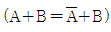
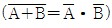
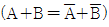
17. 다음 중 Master-Slave 플립플롭은 어떤 현상을 해결하기 위해 사용되는가?
18. 다음 중 동기식 카운터와 비동기식 카운터를 설명한 것으로 옳은 것은?
19. 다음 중 디코더(Decoder)에 대한 설명으로 틀린 것은?
20. 다음 중 전가산기(Full Adder)의 구성으로 옳은 것은?
2과목: 무선통신기기
21. 다음 중 AM 수퍼헤테로다인 수신기의 선택도를 높이는 방법으로 잘못된 것은?
22. 정현파 신호로 변조된 AM파의 측정시 최대진폭(Vmax)이 20[V]이고 최저진폭(Vmin)이 5[V]일 때 변조도(m)는 얼마인가?
23. AM파가 VAM=(100+60cos500πt)cos14×105πt로 표시될 때 변조도(m)은 얼마인가?
24. 변조도가 1인 DSB파를 제곱 검파하면 왜율은 약 몇 [%]인가?
25. 다음 중 다중 반송파 변조(Multicarrire Modulation)에 대한 설명으로 틀린 것은?
26. GPS 측정오차로 보기 어려운 것은?
27. 위성방송 TV수신용 안테나와 가장 거리가 먼 것은?
28. PN(Pseudo Noise) 코드가 (1 1 1 0 1 0 0)이고, 자기 상관 계열의 지연 수(k)가 0일 때 자기 상관 함수값은 얼마인가?
29. 다음 GMDSS(Global Maritime Distress and Safety System) 시스템 중 해안지구국과 직접 통신하는 것은?
30. 다음 중 GMDSS 설비로 406[MHz] 주파수를 사용하는 것은?
31. 다음 중 HF DSC를 이용한 조난경보 수신 메시지 구성에 대한 설명으로 틀린 것은?
32. 다음 중 디지털 선택 호출 장치를 이용한 조난경보 전송에 대한 설명으로 옳지 않은 것은?
33. 축전지 음량 산출에서 허용최저전압(V/Cell)을 구하는 식으로 옳은 것은? (단, V: 허용최저전압(V/Cell), Va: 부하의 허용최저전압, Vc: 축전지와 부하간의 접속 선의 총 전압강하, n: 직렬 접속된 셀 수)
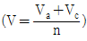
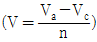
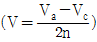
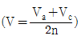
34. 다음 설명은 무정전 전원장치(Uninterruptible Power Supply: UPS)의 어떤 구동 방식에 해당하는 것인가?
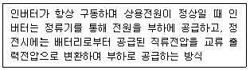
35. 무정전 전원장치(Uninterruptible Power Supply: UPS)의 동작원리를 나타내는 다음 [그림]에서 (A)에 들어갈 장치로 적합한 것은?
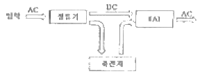
36. 오실로스코프로 전압을 측정한 결과 그림과 같은 파형을 얻었다. 실효값은 몇 [V]인가? (단, 오실로스코프의 편향감도는 b[mm/V]이다.)
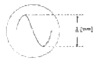
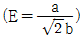
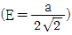
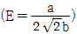
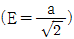
37. 다음 중 AM 및 FM수신기에서 공통적인 종합 특성 측정으로 맞는 것은?
38. 안테나 성능 측정 시 원역장(Far Field) 조건을 만족하는 계산식은? (단, D: 피측정 안테나 최대 직경, λ: 파장)
39. 급전선의 임피던스가 75[Ω]인 안테나에 특성 임피던스 50[Ω]인 급전선을 연결 시 반사계수는 얼마인가?
40. 전압 정재파비가 3인 급전선에서 진행파 전압이 10[V]라면 반사파 전압은 몇 [V]인가?(오류 신고가 접수된 문제입니다. 반드시 정답과 해설을 확인하시기 바랍니다.)
3과목: 안테나공학
41. 다음 중 전자파를 이루는 전계와 자계의 관계를 설명한 것으로 틀린 것은?
42. 다음 중 전파에 대한 설명으로 옳지 않은 것은?
43. 다음의 전계에 관한 파동 방정식 중 Ez 성분을 나타낸 것으로 옳은 것은?
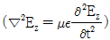
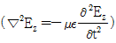
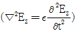
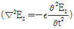
44. 단위 시간에 단위 면적을 통과하는 전자 에너지를 전략밀도라 하며, 전계의 실효치를 E[V/m], 자계의 실효치를 H[A/m], 자유공간의 특성 임피던스를 Z0[Ω]이라고 할 때, 자유공간에서의 전력밀도[W/m2]를 나타내는 식으로 틀린 것은?
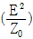
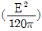
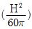
45. 비동조 급전선의 종류와 그 특징을 바르게 짝지은 것은? (순서대로 종류, 특징)
46. 다음 중 동조 급전선과 비동조 급전선에 대한 설명으로 틀린 것은?
47. 동축급전선을 개방하고 임피던스를 측정하였을 때 100[Ω]이고, 단락했을 때의 임피던스가 25[Ω]이라면 이 급전선의 특성임피던스는 얼마인가?
48. 도파관의 내부에 전자파가 발생하도록 도파관을 여진시키는 방법이 아닌 것은?
49. 복사전력이 100[W]인 어떤 안테나로부터 최대복사방향 P점의 전계강도는 500[μV/m]이다. 또 같은 송신점에 복사전력 400[W]인 반파장안테나를 세웠을 때 P점의 전계강도가 100[μV/m]이었다. 피측정안테나의 이득은 약 얼마인가?
50. 안테나의 복사 저항이 25[Ω]이고 손실 저항이 5[Ω]일 때 이 안테나의 복사 효율은 약 얼마인가?
51. 수직 다이폴 안테나의 수평면내 지향성이 무지향성을 유지하면서 이득을 얻기 위해서는 어떻게 하여야 하는가?
52. 장·중파 통신의 특징이 아닌 것은?
53. 제펄린 안테나의 특징이 아닌 것은?
54. 다음 방식 중 원편파를 발생할 수 없는 것은?
55. 극초단파 통신에서 주로 사용하는 전파방식은?
56. 다음 중 전자파 투시도에 관한 설명으로 옳지 않은 것은?
57. 대지반사파에서 자계가 입사평면에 평행하게 경계면에 입사하는 경우 이는 무슨 편파인가?
58. 다음 중 장파와 중파에 의한 전파(Propagation)에서 가장 감쇠가 큰 매질은?
59. E층의 임계주파수가 4[MHz]일 때 송수신소간 400[km]지점에서 E층 반사로 전파하는데 가장 안정하게 통신할 수 있는 최적 사용주파수(FOT)는 약 얼마인가? (단, E층 높이는 100[km]이다.)
60. 위성통신장치는 송·수신기가 한 시스템 내에 설치되어 있으나 송수신할 때 동일한 주파수를 사용하지 않는다. 그 이유로 가장 타당한 것은?
4과목: 통신영어 및 교통지리
61. Choose the mostsuitable word to fill the blank.
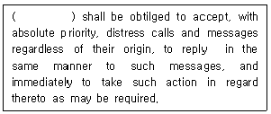
62. Choose the wrong Korean version for the underlined parts.
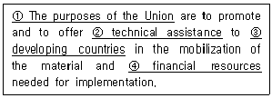
63. Who shall perform the duties of the secretary-General in the absence of the Union?
64. What kinds of time shall be used for every station of the maritime mobils service?
65. Choose the correct term that has the meaning of the following sentence.
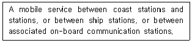
66. 괄호 안에 들어갈 가장 적절한 단어 또는 어휘는 무엇인가?
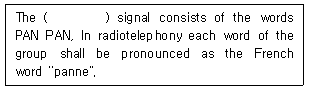
67. Choose the suitable one in the blanks and complete the following sentence.
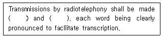
68. Choose the correct one which describes GMDSS.
69. Which is the Organization to continue its studies of the GMDSS?
70. What do we call the following phase in Korean?
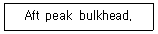
71. Choose the wrong meaning of each underlined parts of the following sentence.
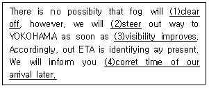
72. 다음 문장의 의미로 옳은 것은?(오류 신고가 접수된 문제입니다. 반드시 정답과 해설을 확인하시기 바랍니다.)
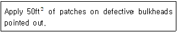
73. 다음 중 OCEAN ROUTE에 대한 설명으로 맞지 않는 것은?
74. 다음 중 The great Lakes에 포함되지 않는 것은?
75. AFRICA의 INDIAN OCEAN 연안에 위치해 있는 도시가 아닌 것은?
76. 다음 해협 중 일본의 연근해 해역에 위치해 있지 않는 것은?
77. 다음 중 세계 주요 항구명으로 소재국이 틀린 것은?
78. 다음 중 한랭전선의 설명으로 맞지 않는 것은?
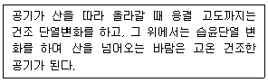
79. 인도의 벵갈만에서 발생하는 열대성 저기압을 무엇이라 부르는가?
80. 다음은 어떤 기상현상을 설명한 것인가?
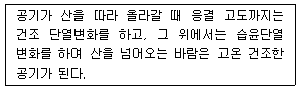
5과목: 전파관계법규
81. 다음 중 전파법의 목적이 아닌 것은?
82. 다음 중 실효복사전력에 대한 설명으로 맞는 것은?
83. 방송을 양호하게 수신할 수 있는 구역으로서 전계강도가 미래창조과학부장관이 정하여 고시하는 기준 이상인 구역은?
84. 무선국 또는 물체의 방향을 결정하기 위하여 전파를 수신하는 무선측위는?
85. 다음 중 무선국 개설허가의 유효기간이 3년인 것은?
86. 다음 중 선박이 입항중인 때에 해당 선박에 개설된 선박국을 운용할 수 없는 경우는?
87. 지정된 안테나공급전력이 500와트인 방송국(초단파 방송 또는 텔레비전 방송국 및 위성방송보조국을 제외한다)의 안테나공급전력의 허용범위는?
88. 다음 중 필요주파수대폭이 잘못 표시된 것은?
89. 다음 중 전자파 인체보호기준 등에 대한 설명으로 틀린 것은?
90. 다음 중 무선국 시설자인 법인이나 개인에 대하여 양벌죄가 적용되는 것은?
91. 다음 중 청문을 하여야 할 사유가 아닌 것은?
92. ITU의 전권위원회는 회원국을 대표하는 대표단으로 구성되어 몇 년마다 개최되는가?
93. 다음 중 ITU 조정위원회의 구성원이 아닌 것은?(오류 신고가 접수된 문제입니다. 반드시 정답과 해설을 확인하시기 바랍니다.)
94. 다음 중 ITU 전권위원회가 행하는 임무가 아닌 것은?
95. 세계전파통신회의(WRC)의 주요 의제의 범위가 아닌 것은?
96. 다음 중 GMDSS 적용을 받는 선박이 갖추어야 하는 초단파대 무선전화의 사용주파수가 아닌 것은?
97. 다음 중 통신보안의 목적으로 적합하지 않은 것은?
98. 전파법에 따른 무선국의 운용 등에 관한 규정에서 정하는 “통신보안”에 해당하지 않는 사항은?
99. 통신수단 중 통신 보안도가 높은 순서대로 바르게 나타낸 것은?
100. 다음 중 감청에 대한 설명으로 알맞은 것은?